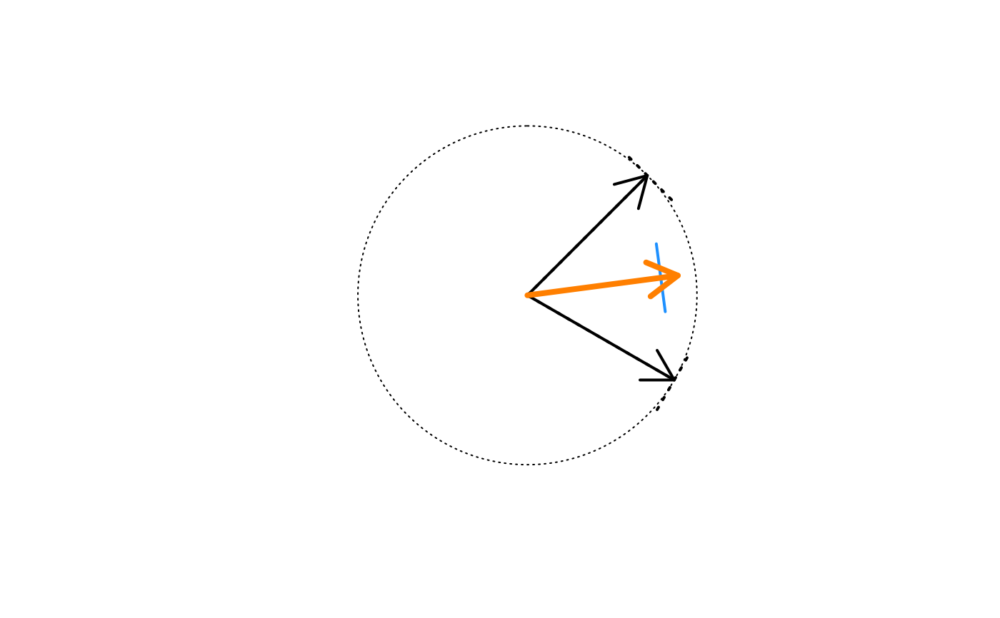

Calculate the mean angle
Arguments
- x
numericvector of angles in degrees- w
numericvector representing weights- do_plot
logicalindicating whether to create a visual summary plot- lens
numericvalue passed tojamba::warpAroundZero()to adjust the radius- ...
additional arguments are ignored
Value
numeric vector that contains
degreethe mean angle in degreesradiusthe actual radius based upon mean unit vectorsradius2the adjusted radius usingjamba::warpAroundZero()
Details
This function takes a vector of angles in degrees (0 to 360 degrees) and returns the mean angle based upon the average of unit vectors.
The function also optionally accomodates weighted mean values,
if a vector of weights is supplied as w.
Part of the intent of this function is to be used for color blending
methods, for example taking the average color hue from a vector of
colors. For this purpose, some colors may have varying color saturation
and transparency, which are mapped here as weight w. Colors which are
fully transparent should therefore have weight w=0 so they do not
contribute to the resulting average color hue. Also during color blending
operations, the resulting color saturation is adjusted using the lens
argument, the default lens=-5 has a tendency to increase intermediate
color saturation.
See also
Other colorjam hue warp:
add_colorjam_preset(),
add_colorjam_step(),
adjust_hue_warp(),
approx_degrees(),
colorjam_presets(),
colorjam_steps(),
display_degrees(),
h2hw(),
h2hwOptions(),
hcl_to_hsl_hue(),
hsl_to_hcl_hue(),
hw2h(),
plot_colorjam_preset(),
remap_colorjam_preset(),
validate_colorjam_preset()
Examples
mean_angle(c(120, 45), do_plot=TRUE);

#> deg radius radius2
#> 82.5000000 0.7933533 0.8944940